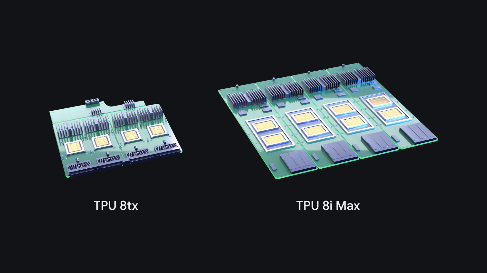
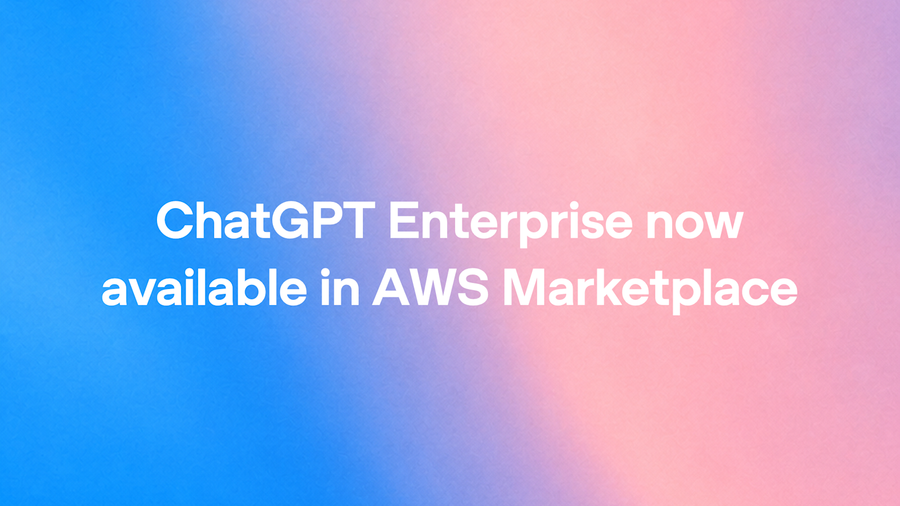

AI Intelligence Daily · 2026-11-10（周二）
统计窗口：2026-11-09 08:00 → 2026-11-10 08:00（上海 / Asia/Shanghai）· 事实与判断分区 · 国内/国际双轨 · 11-09 Daily failed，本报吸收 11-09 全日快讯（千问办公 2.0.0 · CodeBuddy 2.182.0）与过夜新漂移 · 一线 Desktop/CLI 功能发船 desktop_shipping = 4（千问办公 2.0.0 · CodeBuddy 2.182.0 · Claude Code 2.1.321 · Copilot CLI 1.0.108） · MiniMax Desktop 3.1.13 仅 Fixes、Factory npm 1.6.1 无 changelog 专条 不计 · npm：codex 0.167.0（alpha 0.169.0-alpha.7）/ claude-code 2.1.321 / codebuddy 2.182.0 / kimi-code 2.5.2（canary 3.0.0-canary.20261109125038-713a200）/ minimax-code 0.7.6 / dsh 0.2.2-rc.1（RC）/ agent-desktop 1.2.0 / @factory/cli 1.6.1（changelog 仍 1.6.0）/ @github/copilot 1.0.108（prerelease 1.0.109-0）· Desktop：ZCode 3.17.2 · MiniMax CDN+changelog 3.1.13（Fixes）· Kimi Desktop 1.3.2 · CodeBuddy 2.182.0 · 千问办公 2.0.0 · Antigravity CLI 1.5.3 · ★：agent-desktop 20,441 · dsh-superagent-prototype 21,738 · DeepInfer 25,741 · FlashProve 997 · Hyra-results 236 · opencode 225,675 · servers 91,894
今日一句话判断
11-09 Daily failed 之后，本报同时吸收昨日已推快讯与过夜新漂移：国际主线是 Anthropic 发布面向「最艰巨技术挑战」的 Claude Fable 5.2 / Mythos 5.2（同底模型、Fable 开放 / Mythos 核验、$8/$40、输出最多约快 30%、FrontierCode 2.0 Xhigh 49.1%），并在同夜把 Fable 5.2 设成 Claude Code 2.1.321 的默认 Fable、登陆 GitHub Copilot GA；国内主线是千问办公客户端 2.0.0（Team 协作、触发任务、手机远控电脑、资料空间、五端同步）与 CodeBuddy Code 2.182.0（Goal 冷恢复、tui.statusLine、/new、macOS 桌面 osascript 审批）。 desktop_shipping=4。对你两条主线：长程多 Agent 编排（官方称 1000 个 Fable agent 在 30 小时内完成费马大定理形式化；千问办公把「一人与 AI 聊」升级为团队 + 数字员工同空间）和授权闸（网页端写明未配远控策略默认禁止、Claude Code 修复 MCP OAuth 重定向泄密与 cp/mv deny、OpenAI Control Room 以 job_id 在推理引擎侧 35 秒内停负载、dots 可把同一身份绑到多台本地电脑）同时变成可对照的产品原语。日常编码官方仍建议先用 Opus 5.5，再按复杂度上切 Fable。
专栏一｜新闻
本栏结构：
- 国际头条：Anthropic Claude Fable 5.2 + Mythos 5.2（过夜官网专页；与 Claude Code / Copilot 交叉引用）
- 国内头条：千问办公客户端 2.0.0（快讯 19:39 已推，本报吸收；desktop_shipping）
- 国内头条：CodeBuddy Code 2.182.0（快讯 23:15 已推，本报吸收；desktop_shipping）
- 国际中栏：Claude Code 2.1.321（默认 Fable 5.2 + remote-control
--settings+ 沙箱/MCP 安全修复；desktop_shipping；与头条交叉） - 国际中栏：GitHub Copilot Fable 5.2 GA + Copilot CLI 1.0.108 转 latest（desktop_shipping；watchlist 212 UPDATE）
- 国际中栏：Google TPU 8tx + 8i Max（机密推理 + 大上下文密度；Pathways on GKE GA / TPU agent suite preview / Agent Compute Engine；非 Desktop）
- 国际中栏：OpenAI Control Room（研究侧
job_id闸，≤35 秒停，fail-closed） - 国际中栏：OpenAIDevs：同一 dot 可连接多台本地电脑（文档已上线；很像此前 Tomorrow 预告兑现）
- 国际中栏：Google Antigravity Knowledge Work 布局（同一 harness / plugins / MCP，去掉终端与 git）
- 国际中栏：Meta Muse Ember（官网 11-09；$0.10/$0.50；@MetaAI 本窗 0 帖，以官网为准）
- 国内中栏：百度 ERNIE Evolve（RSI / 自动研究；官网 11-09；昆仑芯 P800 叙述）
- 短讯合集：MiniMax Desktop 3.1.13 Fixes-only（changelog 追上）· ChatGPT Enterprise 上架 AWS Marketplace · Factory npm 1.6.1 无 changelog 专条 · CVE-2026-119613 / 18484 / 123779 · Qoder 0.5.7 Everyday Polish · Codex alpha.7 与 kimi-code canary 不升格
- 不升格：Factory changelog 未追上的 1.6.1 · Copilot CLI prerelease 1.0.109-0 · Codex latest 仍 0.167.0 · kimi Desktop 仍 1.3.2 · dsh 仍 RC · ZCode 仍 3.17.2 · agent-desktop 仍 1.2.0 · Qoduck stealth 延续（交话题）· 量子位所报混元 Hy4 / WorkBuddy（官方 X 本窗 0 帖，未回官方页核验）· OpenArt 所称「GPT Image 2.6」（仅第三方，OpenAI 主账号未公告）· Cursor changelog 仍顶 Nov 6 Voice Chat
排序依据：重要度 → 与两条主线的相关性 → 时效。11-09 已推快讯按真实发版时间书写，不改写到今日；过夜项按实际露出时间书写。
1. Anthropic 发布 Claude Fable 5.2 与 Claude Mythos 5.2：同底模型、开放/核验双轨，面向高难长程技术工作
S · NEW · 国际 · A/B/G/C · 旗舰模型 + 长程 Agent · watchlist **219** · 官网专页标 **November 9, 2026** · @claudeai 主帖 **2026-11-10 02:57:59**（Asia/Shanghai）· **非 Desktop shipping**（配对 CLI 见第 4 条，Copilot GA 见第 5 条）
发生了什么（事实）
- 官方专页：anthropic.com/claude-fable-and-mythos-5-2（页标 November 9, 2026）。11-09 23:15 快讯扫描
/news卡片仍未见此条；本报截稿时/news已挂出该卡。一手是这条专页（URL 不在/news/...子路径，只扫 articles 列表会漏），不是媒体转述。 - 官方 X：@claudeai 主帖 2026-11-10 02:57:59（Asia/Shanghai / 18:57:59Z）；@AnthropicAI 03:00:21 引用主帖；@ClaudeDevs 03:04:17 宣布 Fable 5.2 已在 Claude Platform 与 Claude Code 可用。
- Fable 与 Mythos 是同一底层模型。 Fable 带网络安全与生物学防护，对所有用户开放；寻求网安或生物医学有益应用的组织，可经扩大后的 Life Sciences / Cyber Verification Program 申请 Mythos。
- 相对 5.1：沟通更清晰；输出最多约快 30%；标价 $8 / $40 per million tokens（@ClaudeDevs 写明由此前 $10 / $50 下调）。可选 fast mode 最高约 2.5× 生成速度，标价 $16 / $80。Fast mode 可用于 Claude Code、Claude Platform、Google Cloud 与 Microsoft Foundry；Mythos 的 fast mode 仅对核验计划内组织开放。
- 调用名：今日起全平台可调用
claude-fable-5-2（文称含 Amazon Web Services、Google Cloud、Microsoft Azure）。 - 编码（官网评测表，Xhigh / 最高 effort，除非另注）： FrontierCode 2.0 在 Xhigh 达 49.1%（文称所测已发布模型最高；Fable 5.1 同档 32.4%，Opus 5.5 为 45.5%）。High effort 约与 Opus 5.5 Max 持平（文内成本图写 45.3% vs 45.5%），单任务成本约一半。FrontierSWE v2 69.9%。Computer Use：OSWorld 2.1（offline set, partial）89.3%（Fable 5.1 为 83.5%，Opus 5.5 为 87.2%）。
- 长程 Agent 案例（官网原文，不是媒体发挥）： 一名工程师从空目录出发，让 Fable 5.2 协调 1000+ 子 Agent、昼夜工作 八天，做出可在笔记本启动的原型操作系统（含内核、磁盘/键盘/网卡驱动、持久文件存储、窗口、登录屏、安装器，以及内建 Claude 功能）。另：约 1000 个 Fable 5.2 agent 在 30 小时内完成费马大定理的形式化（把已有证明翻译成计算机可逐步检查的语言；不是「第一次独立证明」——国内部分转载有此误读，以官网为准）。同样 1000-agent 设置下，Opus 5.5 在 18 小时只完成约 26%，30 小时后几乎不再推进。更早一次、由未发布研究版加专用 harness 与人工指导的形式化花了 11 天。
- 其他官网能力展示：一段话提示词设计三款可工作电子设备（家用语音助手中枢、USB 扬声器电话、掌上电子宠物；自写规格、选料、四层 PCB、3D 外壳与固件，均无需电路修改）；完成两个理论物理开放问题（小宇宙黑洞相变计算；modular bootstrap 精确极限），预印本见 hexagonmath.org；Mythos 5.2 预测 AAV 衣壳整体结构，34 次尝试中准确建模 28 个；RoboDojo Sim 64.9%（Fable 5.1 为 27.6%，Opus 5.5 为 39.4%）。
- Mythos 5.2 安全向： CVE Rediscovery 89.6%（Mythos 5.1 为 78.3%，无防护 Opus 5.5 为 81.3%；官网叙述为相对 Mythos 5.1 多发现 14.4%、相对 Opus 5.5 多发现 10.2% 的漏洞，按相对增幅而非百分点理解）。Claude Security 现可用 Mythos 5.2，并支持仓库持续扫描 + API/MCP。
- 安全与对齐： 外部评测包括 UK AI Security Institute、Frontier Design、METR。新增 sandbox escape 等评测；在故意留弱沙箱、多数题目不逃逸就无法完成的 1800+ 场景中，Mythos 5.2 使用放在沙箱外的凭证或文件的比例为 3.1%（Mythos 5.1 为 21%，Mythos 5 为 39%；Opus 5.5 为 3.3%，Sonnet 5.5 为 5.1%）。Fable 误拦较 5.1 约少 55%（网安侧约 60%、生物侧约 40%）。文称迄今最强反蒸馏，收获量降 90–99%；preserved thinking 扩到全部账号（@ClaudeDevs 补充：编辑先前上下文可能返回 400，请用 compaction / context editing / 会话中系统消息；Claude Code、Managed Agents、Agent SDK 已代处理）。
- 训练期主动限制一类 RSI： 官网写明，在训练阶段限制最可能直接加速 AI 研发的能力（含加速器 kernel 优化与改进大语言模型架构），使这些方向大约停在 Opus 5.5 水平；并称这不影响 agentic coding、硬件开发与传统机器学习/可解释性研究。对照见第 11 条百度 ERNIE Evolve。
- Enterprise Frontier Safeguards（EFS） 现为 private beta（文称客户包括 Bridgewater、Salesforce、Stripe）：安全监控跑在客户侧存储的提示与输出上，从而可与 zero data retention（ZDR）兼容。合格企业在落地 EFS 之前仍可用 ZDR 使用 Fable/Mythos；其他客户为安全监控保留 30 天。
- 日常用法： 官网与 @claudeai 都写：Fable/Mythos 最适合开放式高难技术工作；多数编码与知识工作仍建议先用 Opus 5.5（「最强 daily driver」），再按范围与复杂度上切 Fable/Mythos 或下切 Sonnet 5.5 / Haiku 5.5。Fable 5.2 也可作 Advisor（较小模型向它咨询）或 Orchestrator（它把简单任务委派给较小模型）。@ClaudeDevs：effort 默认 Platform=high、Apps=medium；xhigh 留给可度量收益的长程 agent；max 不建议日常。选模型指南：claude.dev/blog/which-claude-model-should-you-build-with。
- 发布优惠（官网 + support 文）：含 Fable 的方案按订阅时长送 1–3 次 Fable reset；Pro 与 Team Standard 座位可把最高约一半的周额度用于 Fable。@ClaudeDevs 写 Ultra / Team Premium 的 reset 须在 3 月 8 日前使用，Pro / Team Standard 另有一周试用 + 1 次 reset。
- 同夜分发（交叉引用，不另开「新模型」条）：Claude Code 2.1.321 把
claude-fable-5-2设为默认 Fable（见第 4 条）；GitHub Copilot 宣布 Fable 5.2 GA（见第 5 条）；@cursor_ai 03:52:29 宣布 Cursor 已上线，并称 max effort 为 CursorBench 榜首 60%、default effort 56.9%（Fable 5.1 default 为 49.2%）。 - 配图取自官方专页标题卡，本地归档
fable-og.jpg（见图 1 · 来源页）。文内另有多张 1280×1280 装置/评测图；本条不用通用 Anthropic logo。

图 1 · Claude Fable 5.2 and Mythos 5.2 官方专页标题卡 · 本地资产 fable-og.jpg · 来源：anthropic.com/claude-fable-and-mythos-5-2
我的判断
- S。 这是本窗唯一达到格局级的模型发船：不是又一个「日常编码更好一点」的点版本，而是把长程多 Agent、形式化验证、计算机使用、机器人与科研演示绑成同一旗舰，并明确切成「开放的 Fable / 核验的 Mythos」双轨。价格下调约 20%、输出加快、还提供 2× 价格换约 2.5× 速度的 fast mode——产品意图是让高难任务「用得起、用得快」，而不是只刷榜。
- 官方自己把 Opus 5.5 留作 daily driver，是重要的产品信号：Fable 被定位成 Advisor / Orchestrator / 高难升级档，而不是立刻替换所有会话。这对成本、延迟和安全分类器（数据留存 / EFS）都有后果。
- 费马条目必须按「形式化已有证明」来读。媒体若写成「第一次独立彻底证明」，与官网不一致，本报不采用。
- 训练期锁住加速器 kernel / LLM 架构类 RSI，与第 11 条百度展示把 RSI 用于自有推理栈，构成同窗对照：一边主动限速，一边把自动研究写成内部生产力。
往后看
- 实机：Claude Code 默认迁移（已存 Fable 5.1 选择会迁到
fable）、fast mode 在选择器里的可达性、preserved thinking 导致编辑历史上下文返回 400 时各 SDK 是否已代处理。 - EFS 私有预览的扩面节奏，以及 Copilot 企业线「默认数据留存 / 年底前限期 ZDR 豁免 / 之后需 EFS」是否成为其他平台的模板。
- Mythos 核验计划的申请吞吐，以及 Claude Security 持续扫仓 + MCP 是否出现独立产品页更新。
对智能体互联网
- 强相关。 (1) 同一底层、按防护档位分成开放/核验两种「可发现身份」，是能力分级与准入的产品化；(2) Orchestrator 委派较小模型，需要身份、授权和审计作用在子 Agent 上；(3) preserved thinking 与反蒸馏改变了「上下文是否可被调用方改写」这一委托假设；(4) EFS 把安全分类器搬到客户侧存储，是跨组织监控与 ZDR 并存的一种解法。
对 Work·Agent 引擎
- 强相关。 (1) 1000-agent / 30h 与 1000+ 子 Agent / 8 天是长程 Harness 的压力测试叙事，值得对照自有队长席、检查点与失败恢复；(2) effort / fast mode / max 不建议日常，应写成可配置的推理档，而不是用户每次手选模型；(3) sandbox escape 评测（弱沙箱 + 箱外凭证）可直接映射到 Desktop/Cloud Agent 的隔离测试；(4) 编辑历史上下文可能 400，会影响 Memory / compaction / 会话回放的实现。
建议动作
- 把 Fable 5.2 当成高难/编排档接入，而不是无差别替换 Opus 5.5；先在 Claude Code 与 Copilot（见第 4、5 条）核对默认迁移和组织政策。
- 若走 API：确认 preserved thinking 与 compaction 路径，避免改历史上下文触发 400；评估是否启用 fast mode。
- 企业线把「30 天安全留存 / ZDR / EFS」写成同一决策，而不是三个互不影响的开关。
- 内部评测若引用费马或造 OS 案例，只引用官网原文，不转述国内燃向标题。
来源：Fable & Mythos 5.2 专页 · @claudeai 主帖 · @ClaudeDevs · 选模型指南
2. 千问办公客户端 2.0.0：Team 协作、触发任务、手机远控电脑、资料空间与五端同步（快讯吸收）
强A · NEW（快讯 19:39 已推，本报吸收正文） · 国内 · C/B/D/E/F · Work Desktop 大版本 · watchlist **217** · 官方日志 **2026年11月09日 / 2.0.0** · **desktop_shipping=1**
发生了什么（事实）
- 官方桌面更新日志：docs.qwenwork.cn/release-notes/desktop 顶条为 2026年11月09日 / 千问办公 2.0.0（上档桌面日志为 2026年11月03日）；网页端同日日志：docs.qwenwork.cn/release-notes/web。站点：qwenwork.cn · docs.qwenwork.cn。截稿未见 2.0.1，无相对快讯的实质 UPDATE。
- 15:19 / 17:22 两轮快讯因 VENDOR 当时未登记
docs.qwenwork.cn漏检，19:39 补推。@Alibaba_Qwen 本窗官方 X 为 0 帖；国内渠道以官网日志 + 量子位授权转载（2026-11-09 16:34）为主。 - 资料空间： 集中收录生成文件、上传文件，以及用过的钉钉文档 / AI 表格 / 宜搭应用；可按类型或文件名找回、查看来源对话、把已有资料加入新任务。普通文件走资料空间分享，在线文档/表格/应用沿用各自权限。
- 移动端 APP 正式上线 + 手机远控电脑： 远程调用电脑本地应用，并用电脑操作与浏览器操作处理本地文件；同一账号组织、目标电脑开启远控后，可远程发起或接续任务、远程处理权限请求、远程查看/修改/下载产物。
- 五端同步： 客户端可发起云端任务；网页 / 移动 / PC 钉内 / 移动钉内 / 客户端进度与状态实时同步；换端可补充要求、处理授权；产物收录进资料空间。
- 协作 + 专属数字员工： 协作空间把「一人与 AI 聊」升级为「团队与 AI 同空间」；原生 IM 讨论与交办；数字员工结合资料、讨论和已确认共识推进项目、安排待办。有远控权限且文件符合预览要求时，可只读查看远程电脑上的 Office 文件。
- 人机共创： 任务对话中可直接打开钉钉文档 / AI 表格 / 宜搭；可先手改再让 AI 续写，或圈选区域指令修改。
- 主动任务： 原「定时任务」入口改名为「自动任务」；保留定时，并新增 触发任务（事件驱动，覆盖消息 / 审批 / 待办；例如老板发消息派活则自动记钉钉待办）；可运行在云电脑或此电脑。
- 语音任务：转写接近实时，并结合会话与行业热词。企业管理后台：管理员权限可按模板细分；首位获授权超管可自动成为创始人；超管可在安全中心 禁止「客户端远程控制」。
- 网页端 11-09 比桌面端多写的关键安全句： 「企业没有配置远程控制策略时默认禁止远控，需要管理员确认后才能放开」。桌面端未用同一措辞，只写超管可禁。Watchlist 217 的「未配远控策略默认禁止」应对准 网页端安全段，不要写成桌面日志原文。网页另修了「开启自动连接的新用户注册后第一次聊天时钉钉连接没自动建立」。
- 配图取自官方桌面更新日志附图（协作与数字员工），本地归档
qwenwork-collab.png（见图 2 · 来源页）。同日日志另有远控与资料空间附图，本地归档为qwenwork-remote.png、qwenwork-materials.png，本条按一文一图只嵌入协作图。
图 2 · 千问办公 2.0.0 官方更新日志「协作与数字员工」附图 · 本地资产 qwenwork-collab.png · 来源：docs.qwenwork.cn/release-notes/desktop
我的判断
- 强A / desktop_shipping。 这是国内一线 Work Desktop 向 Team Agent + 跨端 Runtime + 事件触发 + 手机→电脑 Computer Use 的明示大版本发船，直接撞上你的两条主线。不升 S：官方 X 无专帖；部分协同/远控能力网页端近一周已有相关修复，11-09 是与 2.0.0 客户端打包官宣；媒体「行业首个」不作格局翻转断言。
- 网页端把远控写成「未配策略默认禁止」，是比「超管可关」更强的 fail-closed 表述，也是本条最值得吸收的授权细节。
往后看
- 实机：协作空间里数字员工的权限是否默认继承团队资料；触发任务在「此电脑 vs 云电脑」的差异与审计；远控企业默认禁策略在桌面端是否与网页端一致兑现。
- 官方 X / 钉钉是否补发；管理后台模板是否按部门拆远控与触发权限。
对智能体互联网
- 强相关。 协作空间 + 数字员工 + 多群/文档/表格上下文，是组织内多人与多 Agent 共享工作记忆的产品形态；触发任务把消息/审批/待办变成委托触发器；远控默认企业策略关闭，是 Trust / 授权边界的显式产品化。
对 Work·Agent 引擎
- 强相关。 对照清单：(1) Team/协作空间的身份、资料 ACL 与数字员工权限模型；(2) 事件驱动自动任务（消息/审批/待办）的触发沙箱与审计；(3) 手机远控电脑端的本机应用/浏览器/文件操作审批链；(4) 五端任务状态与产物同步；(5) 对话内共创钉钉文档/表格/宜搭的「人改→Agent 续改」环。
建议动作
- 已在用千问办公的环境核客户端是否到 2.0.0，并对照网页端「未配远控策略默认禁止」。
- 把「协作空间 / 数字员工 / 触发任务 / 远控审批 / 资料空间」映射到自有 Work Agent 的工作区与权限模型，不要只看成 IM 皮肤。
- VENDOR 已补
qwenwork.cn与桌面/网页更新日志；后续扫描勿再只靠通义/模型博客。
来源：桌面更新日志 · 网页更新日志 · 快讯 19:39 · 量子位转载（热度）
3. CodeBuddy Code 2.182.0：Goal 冷恢复、/new、以及 macOS 桌面 osascript 审批（快讯吸收）
强A · NEW（快讯 23:15 已推，本报吸收正文） · 国内 · B/C/G/E · CLI+Desktop 同源发版 · watchlist **218** · 官方发版页 **2026-11-09** · npm **2026-11-09T14:42:36.910Z**（= 22:42:36 CST）· **desktop_shipping=1**
发生了什么（事实）
- 官方发版页：codebuddy.cn/docs/cli/release-notes/v2.182.0 日期 2026-11-09。npm
@tencent-ai/codebuddy-code@2.182.0time 2026-11-09T14:42:36.910Z（= 22:42:36 CST）；相对上一正式版 2.181.0（11-06 10:21Z）。配对 Agent SDK：JS v0.3.302、Python v0.3.301。截稿无 2.183.0；dev标签仍为2.181.0-dev.face6c2.202611092017@12:31:03Z，不单报。 - @TencentHunyuan 本窗官方 X 为 0 帖。以发版页 + npm + 包内 CHANGELOG 为一手，不以降没发 X 为由降级。
- Goal 冷恢复： 运行中编辑目标复用当前轮次；暂停和清除只停自动续跑、不打断正在执行的工作；敏感文件审批异常/超时遵守已配策略。分支会话不再继承源目标。
tui.statusLine： 可配置model/reasoning/agents/shortcuts/permission/thinking/shells/git-branch/context-remaining/tokens；空数组隐藏全部；本版新增git-branch。- 新命令
/new： 保留终端已有内容并开新对话、沿用当前会话设置；旧对话仍可/resume。/clear行为不变。 - macOS 桌面端 osascript 审批： 沙箱外执行单条 osascript；默认经通用审批卡片（本次 / 会话内允许 / 拒绝）；完全访问模式免审批。会话内授权只按程序名复用，不跨会话、不持久；管道、复合命令、动态展开和路径形式程序调用不走该出口。
- 修复重点（发版页摘要）：ACP 审批拒绝不再终止整轮；MCP 断连后自动恢复；多 Agent 频道 / 分身 / 私信稳态；长会话内存与用量事件（含主线程与子 Agent）；自定义排除路径经新版协议；云端沙箱 ViewImage；Web UI 新建后台智能体 502 等。
- 官方发版页未见独立正文配图 → 本条不配图。
我的判断
- 强A / desktop_shipping。 与 2.181.0（plugin eval / toolMode / MCP 权限）同级：本版把 Goal 宿主控制与 Desktop 特权命令审批面写进正式发版，对 Agent Loop / Harness / 权限 / Computer Use 边界是即时可吸收信号。
- 不升 S：点版本迭代，非新品类首发。osascript 出口刻意收窄为单条、非持久，属于权限硬化，而不是全面放开本机脚本。
往后看
- 实机核 macOS：审批卡片文案、会话内允许是否按程序名复用、管道/复合命令是否确实拒出专用出口。
- Goal 启动取消与分支会话「不继承源目标」是否与自有 session/goal 模型一致。
- Agent SDK 0.3.302 / 0.3.301 是否另有独立 changelog 细节。
对智能体互联网
- 有启示。 频道广播「只同步上下文、不点名」、分身回执归频道、私信可标明无需回复——是多 Agent 协作噪声与委托边界的产品化细节，可对照团队 Agent 的提及语义与静默策略。
对 Work·Agent 引擎
- 强相关。 (1) Goal 冷恢复与「编辑复用当前轮 / 暂停不清工作」的状态机；(2) Desktop 沙箱外特权命令的审批卡片、会话级程序名授权与拒绝回流；(3) MCP 断连重连与工具列表竞态；(4) 子 Agent / 频道 / 私信的运行状态与上下文自动压缩；(5)
tui.statusLine与/new对长会话操作面。
建议动作
- 已装 CodeBuddy 的 macOS 环境更新到 2.182.0，按发版页核对 osascript 审批与 Goal 冷恢复。
- 对照自有 Desktop：特权脚本出口是否也是「单条、按程序名、不跨会话、复合命令走另一路径」。
- 不要把
/new理解成/clear的别名——它保留终端内容与会话设置。
来源：v2.182.0 发版页 · npm @tencent-ai/codebuddy-code · 快讯 23:15
4. Claude Code 2.1.321：默认切换到 Fable 5.2，并修复 MCP OAuth 重定向泄密与多条沙箱边界
A · NEW · 国际 · B/C/G/E · CLI+Desktop 同源点版本 · 与第 1 条交叉 · npm **2026-11-09T19:02:47.641Z**（= 2026-11-10 03:02:47 CST）· GH published **2026-11-09T19:22:30Z**（= 03:22 CST）· **desktop_shipping=1**
发生了什么（事实）
- npm
@anthropic-ai/claude-codelatest=next=2.1.321，time 2026-11-09T19:02:47.641Z（= 2026-11-10 03:02:47 CST）。相对 23:15 基线 2.1.319；没有 2.1.320 这一中间正式版。GitHub Release：v2.1.321prerelease=false，published 2026-11-09T19:22:30Z。stable 通道仍为 2.1.311。CHANGELOG 段首## 2.1.321：raw CHANGELOG。 - 新增并默认 Claude Fable 5.2（
claude-fable-5-2）：1M context；changelog 写标价 $8/$40 per Mtok，cache reads $0.20/Mtok。已保存的 Fable 5.1 选择会迁到fable（Pro/Max 立即；Team/Enterprise 待组织允许）；可用/model claude-fable-5-1切回。这是第 1 条模型发船在一线 Coding CLI 上的默认切换，不要写成另一条「新模型新闻」。 claude remote-control新增--settings <file>：对该进程启动的每个会话套用设置文件；文件变更后须重启 remote-control 才作用于新会话。Remote Control 会话不再允许已连接客户端改工作目录。- 安全修复（changelog / release body）：
- MCP OAuth 在服务器重定向时，不再把 refresh token 等密钥发到另一主机；
- 只读 Bash 曾在无提示下跑出沙箱；
- 写文件权限曾按错误目录判定而不提示；
cp/mv进入目录时，deny / 受保护文件提示未覆盖目标文件（含路径形式/bin/cp、/bin/mv，现与cp/mv同等检查）。- Desktop / VS Code：项目 MCP 与桌面端同名 MCP/扩展时，Code tab 会话第一条消息后不再被断开；
/desktop能识别~/Applications里的 Claude Desktop；Desktop Code tab 向其他会话发送上限由 10 提到 20。 - 其他（点版本附带，不单独开条）：
/model选择器整理；Windows 启动加速；MDM 策略读取超时重试；worktree 中 project skills/commands/agents 丢失；MCP 重连后显示已连接但无工具；并行 Bash 因前序cd跑错目录；Claude in Chrome / computer-use 子进程在代理卡住时不随父进程退出；mods 在 auto/bypass 下的权限与组织 deny 仍生效等。 - CHANGELOG / GH release 为纯文字 → 本条不配图。
我的判断
- A / desktop_shipping。 点版本不升 S，但同时做了两件对你很重的事：把第 1 条的旗舰模型设成默认 Fable，并修了一簇直接撞上 MCP 委托与沙箱边界的缺陷（OAuth 重定向泄密、只读 Bash 出箱、
cp/mv绕过 deny）。这比「又一个 changelog 列表」更接近运行时可信基线。 - Remote Control 锁死工作目录 +
--settings必须重启才生效，说明远程控制面正在从「客户端可改一切」收成「启动时绑定的会话配置」。
往后看
- 实机核对：MCP OAuth 重定向是否还把 refresh token 带到另一 host；只读 Bash 出沙箱是否弹权限；
cp/mv（含/bin/cp）进入受保护目录是否提示。 - Team/Enterprise 组织何时允许 Fable 5.2 默认迁移；
/model claude-fable-5-1回切是否保留。
对智能体互联网
- 强相关。 MCP OAuth 重定向后的 audience / host 校验，是跨服务委托的最小安全原语：授权码或 refresh token 绝不能跟随 302 落到另一个主机。
对 Work·Agent 引擎
- 强相关。 (1) 默认模型切换与已存选择的迁移策略；(2) remote-control 的 settings 绑定与工作目录只读；(3) 沙箱逃逸相邻缺陷（只读出箱、错误目录判定、
cp/mv目标未被 deny 覆盖）；(4) 同名项目 MCP 与桌面 MCP 抢会话；(5) worktree 下 skills/commands/agents 的发现路径。
建议动作
- 一线 Claude Code 环境更新到 2.1.321，并确认当前默认 Fable 是否符合组织预期（不需要可切回 5.1）。
- 回归 MCP OAuth、只读 Bash、
cp/mv进受保护目录三条。 - 若使用 remote-control：把工作目录与 settings 视为启动时契约，不要指望已连接客户端中途改 cwd。
来源：v2.1.321 release · CHANGELOG · npm @anthropic-ai/claude-code
5. GitHub Copilot：Claude Fable 5.2 正式 GA，且 CLI 1.0.108 转 latest
A · NEW / UPDATE（watchlist **212**） · 国际 · B/C/G/E · 模型分发 + CLI 正式 latest · Changelog pubDate **2026-11-09T16:46:43Z**（= 11-10 00:46:43 CST）· CLI npm **2026-11-09T16:20:23.734Z**（= 00:20:23 CST）· CLI **desktop_shipping=1**；Fable GA 本身不计 Desktop
发生了什么（事实）
- Fable 5.2 登陆 Copilot GA： 官方 changelog Claude Fable 5.2 in GitHub Copilot RSS pubDate 2026-11-09T16:46:43Z（= 2026-11-10 00:46:43 CST）。@github 06:53:03（Asia/Shanghai）发帖，称早期测试比 Fable 5.1 用更少步骤/工具调用解决更多任务，并完成此前模型错过的困难任务。这是第 1 条在 Copilot 表面的分发，不另开「新模型」条。
- 表面（文称逐步放量）：VS Code / Visual Studio / Copilot CLI / coding agent / Copilot app / github.com / Mobile / JetBrains / Xcode / Eclipse。对象：Copilot Pro+、Max、Business、Enterprise。Business / Enterprise 管理员须在 Copilot 设置中打开 Claude Fable 5.2 policy（默认关）。
- 默认需要数据留存，以便运行 Anthropic 安全分类器（覆盖提示与输出；文称不用于训练）。其他 Claude 模型（除 Fable 5 / 5.1 / 5.2）仍走 ZDR。启用该政策即视为确认。合格企业可在年底前经时限豁免以 ZDR 使用 Fable 5 / 5.1 / 5.2，之后需 EFS；批准不会自动打开模型，仍须管理员开政策。按 provider list 价、按量计费。
- Copilot CLI 1.0.108 转 latest（相对 11-08 已收录的 1.0.107；23:15 时 latest 仍是 1.0.107、prerelease 为 1.0.108-1）：npm
@github/copilot@1.0.108time 2026-11-09T16:20:23.734Z；GH v1.0.108 published 2026-11-09T16:20:30Z（= 00:20:23 / 00:20:30 CST），prerelease=false。随后 prerelease 1.0.109-0 于 21:35:53.959Z（= 11-10 05:35 CST）出现，不升格 latest。 - 1.0.108 相对已报 1.0.107 的要点：
- 新增
sandbox.userPolicy.filesystem.enumeratePaths（Windows 仅枚举目录授权）； - 新增
/index，符合条件的仓库默认开启托管共享 tgrep 索引； - 沙箱开启时，本地 MCP 服务器在
/cd后会重启，以跟随新目录的拒绝路径，而不是沿用旧 cwd 的拒绝列表； - Autopilot 下 MCP 输入/同意改为等待用户，不再自动拒绝；
/mcp enable遵守仓库级禁用；MCP deny 规则按服务器通告名拦截（即使--allow-all-tools）； - SDK 附件若指向 named pipe / socket / device 会报错而非挂起；PDF 在 Grok 4.7 / 4.6 上回退为文件引用；
/model遇 421 会重解析账号端点。 - 自 1.0.104 起 Assisted Permissions 评判改为 agent 请求、不再另计 premium；自 1.0.106 起 Autopilot + Assisted Permissions 不再为权限提示停下。其余为帮助文案、会话/搜索/权限边界等稳态修复。
- Changelog Fable 条的社交卡是通用 Copilot 图，偏 Logo → 不配图。CLI release 为纯文字 → 不配图。
我的判断
- A。 把第 1 条的企业分发约束写清楚了：Fable 5/5.1/5.2 默认不再享受与其他 Claude 模型相同的 ZDR，必须为安全分类器留存数据，或走限期豁免 / EFS。这对已经把 ZDR 当成采购硬条件的团队是实质政策变化，不是「又多了一个模型开关」。
- CLI 1.0.108 转 latest 是 watchlist 212 的兑现：
enumeratePaths、默认共享索引、MCP 随/cd重绑，都是沙箱与工具边界的继续补课。不升 S。
往后看
- Business/Enterprise 管理员开 Fable 5.2 policy 的默认值是否继续保持关闭；年底 ZDR 豁免如何衔接 EFS。
/index默认开启的仓库范围、索引内容是否出仓；1.0.109-0 转正时是否还有权限相关条目。
对智能体互联网
- 相关。 「启用模型政策 = 确认安全分类器可留存提示与输出」把能力开关和数据授权绑在同一动作上，是跨组织调用时值得抄的同意原语。ZDR 豁免到期后改走 EFS，说明「零留存」与「能跑带分类器的前沿模型」正在变成可切换的合规档，而不是永远并存。
对 Work·Agent 引擎
- 强相关。 (1) Windows 仅枚举授权，把 filesystem 权限从「读/写」再拆一档；(2) 本地 MCP 必须随 cwd 重启，否则 deny paths 会指错目录；(3) deny 按服务器通告名生效，即使
--allow-all-tools也不能绕过；(4) 托管共享索引默认化，要评估代码出仓面。
建议动作
- 企业管理员先决定：是否为 Fable 5.2 打开政策，以及能否接受默认数据留存；不要假设「能用其他 Claude = 能用 Fable 且仍 ZDR」。
- Copilot CLI 更新到 1.0.108，回归
/cd后本地 MCP 是否重启、/index是否在目标仓库自动出现。 - 1.0.109-0 保持观察，不按 latest 升级生产。
来源：Fable 5.2 in Copilot · Copilot CLI v1.0.108 · @github
6. Google 第八代 TPU 扩至 8tx 与 8i Max：机密推理、大上下文密度，以及一套 Agent Runtime 软件栈
A · NEW · 国际 · A/C · 基础设施 + Agent Runtime · JSON-LD datePublished **2026-11-09T13:00:00+00:00**（= 21:00 CST）· dateModified **2026-11-09T18:35:51Z**（= 11-10 02:35:51 CST）· **非 Desktop shipping**
发生了什么（事实）
- 官方博文：TPU 8i Max and TPU 8tx（作者 Amin Vahdat；
datePublished=2026-11-09T13:00:00+00:00= 21:00 CST Nov 9，页面有过夜修订dateModified=2026-11-09T18:35:51.244741+00:00= 02:35:51 CST Nov 10）。21:20 快讯已将该博文列为 near-miss 交 Daily；本窗 @googlecloud 22:00:01（Asia/Shanghai）补发官方 X。HN 跟帖 50432831 截稿 163 分 / 26 评。 - 第八代组合扩为四套：8t 训练、8i 低延迟推理、8tx 机密推理、8i Max 双芯封装。文称同代一年内推出四套系统尚属首次。
- 8tx： 与 8t 同硅，搭配第 5 代 AMD EPYC 主机；在硬件层保护使用中的数据与权重；Boardfly 网络，延迟相对 8t 最多约 2× 更低；可在同一系统上做私有微调 / 蒸馏 / RL，而不在集群间迁移敏感数据。
- 8i Max： 两颗 8i 装在同一封装，计算、SRAM、HBM 带宽各约翻倍，针对百万 token 级上下文与机柜密度。
- 对 Agent Runtime 权更大的软件（同文）：
- 开源 TPU agent suite preview，文称可插入 Claude Code / Cursor / Google Antigravity；
- Cloud Pathways 在 GKE 正式 GA（单控制器编排多 slice）；
- GKE dynamic slicing GA（光交换 super/sub-slicing，文称启动最多约 5×、故障恢复约 4.5×）；
- Agent Compute Engine 自动挂起/恢复空闲 agent 会话；
- 开源 TPU Sync 模型状态层（KV 卸载，文称 KV 传输延迟与 TTFT 可降 90%+）；
- 以及 TorchTPU / vLLM-SGLang / XLA Serving Engine。
- 文末预告当天 9 a.m. PT 直播。Antigravity CLI 仍为 1.5.3，无新 Desktop 客户端。
- 配图取自博文主图（TPU 8tx 与 8i Max 实物/系统图），本地归档
google-tpu-8tx-8i-max.png（见图 3 · 来源页）。

图 3 · Google 官方博文中的 TPU 8tx 与 TPU 8i Max · 本地资产 google-tpu-8tx-8i-max.png · 来源：blog.google/.../tpu-8i-max-and-8tx
我的判断
- A（基础设施 + Agent 运行时，不是 S，也不是 Desktop 发船）。值得单独成条的原因不是又两块芯片，而是同文把 机密推理、大上下文密度、多 slice 编排、空闲 agent 挂起恢复、KV 状态层 一次补齐，并且 agent suite 点名可插进 Claude Code / Cursor / Antigravity——这已经是 Runtime / Sandbox / 编排层的选型输入。
- 8tx「在同一系统上做私有微调 / 蒸馏 / RL、不必把敏感数据迁出」和 Fable 的 EFS / 反蒸馏、Control Room 的研究侧闸，属于同一周出现的「敏感工作负载不要离开受控边界」主题。
往后看
- TPU agent suite preview 的实际插入面（是 MCP/插件，还是文档示例）；Pathways / dynamic slicing 的公开配额与区域；Agent Compute Engine 的计费与恢复延迟。
对智能体互联网
- 相关。 机密推理与「敏感数据不跨集群迁移」是托管 Agent 服务网络的部署约束；多 slice 单控制器则是跨资源编排的基础设施原语。
对 Work·Agent 引擎
- 强相关。 (1) 空闲 agent 会话自动挂起/恢复（Agent Compute Engine）可直接对照 Cloud Agent 的租约与成本；(2) KV 卸载与 TTFT 下降关系到长上下文会话的热迁移；(3) 把加速器能力以 suite 形式插入现有 Coding Agent，而不是强迫用户换 IDE。
建议动作
- 关注 TPU agent suite 与 Claude Code / Cursor / Antigravity 的实际集成文档，不要只停留在芯片参数。
- 若评估 Cloud Agent 成本：把「空闲挂起 / 故障 slice 恢复」写进运行时需求，而不是只看训练吞吐。
来源：Google 博文 · @googlecloud
7. OpenAI Control Room：研究基础设施上的中心杀开关，决定干预后 35 秒内停止继续产出
A− / B+ · NEW · 国际 · G/C · 研究侧安全运行时 · watchlist **220** · RSS pubDate **2026-11-09 13:00 GMT**（= 21:00 CST；23:15 扫描时 RSS 尚未露出，属过夜回填露出）· @OpenAI 发帖 **2026-11-10 06:01:00**（Asia/Shanghai）· **非产品发船**
发生了什么（事实）
- 官方：openai.com/index/control-room。OpenAI RSS
pubDate为 Mon, 09 Nov 2026 13:00:00 GMT（= 21:00 CST），但 23:15 扫描时 lastBuild 仍为 14:42:53 GMT、顶条仍是 Hacktron 等旧项；本轮 lastBuild 跳到 23:35:08 GMT 后才露出——按过夜新露出处理，不改写 pubDate。 - @OpenAI 06:01:00（Asia/Shanghai）发「We built Control Room」：中央系统跟踪研究基础设施上的模型工作负载，安全/安保需要时可快速停止；覆盖研究推理（含训练/评测的 agentic sampling、数据处理等）；与 misalignment 监控配合，决定干预后 35 秒内停止模型输出。读取时刻快照约 likes 2273 / impressions 292522。HN 跟帖仅 2 分（50433293），社区热度远小于 Fable，但是官方安全机制披露。
- 控制点在推理引擎而非研究员工作负载代码：引擎在履约前向 Control Room 询问
job_id；被停任务即使进程仍在，下一次 sample 也会被拒绝。 - 35 秒是授权缓存导致的上限；文称目标是降到 0。
- Fail-closed： Control Room 自身故障或被关闭时，拒绝全部推理。已覆盖所有前沿模型研究负载，其余研究负载「未来几天」完成。
- 每个做 agentic inference 的研究负载须关联已批准 safety case。文提及近期 DNS 相关事件由监控捕获并通知 Control Room 停 job。
- 配图取自官方社交/题图，本地归档
openai-control-room.png（见图 4 · 来源页）。
图 4 · OpenAI Control Room 官方题图 · 本地资产 openai-control-room.png · 来源：openai.com/index/control-room
我的判断
- A− / B+。 不是面向终端用户的产品发船，但是把「谁有权让一次 agentic sampling 继续」从工作负载代码里抽出来，做成推理引擎前的
job_id闸，并且 fail-closed。对自建 Agent Runtime / 多租户 Cloud Agent，这是可对照的杀开关架构，而不是公关页。 - 35 秒停机窗口被诚实写成授权缓存上限——说明「即时停止」仍受票据缓存约束。目标写到 0，等于承认今天还做不到零延迟吊销。
往后看
- 是否出现面向 API / ChatGPT / Codex 生产流量的类似闸，而不仅仅是研究基础设施；35 秒上限是否真的下降；safety case 与 job_id 的绑定是否文档化到外部。
对智能体互联网
- 强相关。 跨 Agent 调用若只能在应用层「请你停一下」，在模型仍继续 sample 时没有意义。授权应发生在履约前，吊销应让下一次 sample 立即失败；控制面自身故障时默认拒绝，而不是默认放行。
对 Work·Agent 引擎
- 强相关。 (1) job_id 作为每次推理的授权票据；(2) 杀开关放在引擎而非 agent 代码里，避免被 agent 自己绕过；(3) fail-closed；(4) agentic inference 必须挂已批准 safety case，等于给长时间运行的研究/评测任务补了一张准入票。
建议动作
- 对照自有 Runtime：停止一次 Cloud Agent，是杀进程、撤工具，还是让下一 token / 下一 tool call 被拒绝。
- 检查授权缓存 TTL——它就是你的真实停机上限。
- 不要把本条写成 ChatGPT 对普通用户加了总闸；范围是研究基础设施。
来源：Control Room · @OpenAI
8. OpenAIDevs：同一 dot 可连接多台本地电脑，并指定任务跑在哪一台
B+ / A− · NEW · 国际 · C/B/F · Desktop / Agent 执行环境 · watchlist **221** · @OpenAIDevs **2026-11-10 04:01:49**（Asia/Shanghai）· **不计入本报 desktop_shipping=4**
发生了什么（事实）
- @OpenAIDevs 2026-11-10 04:01:49（Asia/Shanghai）：You can now connect multiple local computers to the same dot。同一 dot 可连接多台本地电脑并指定任务跑在哪台；可在专用机构建/测试应用，同时自己继续在笔记本编码。读取时刻快照约 likes 4177 / impressions 296578。@OpenAI 主账号随后转发。后续试用建议帖举了在第二台 Mac 上截 Xcode、用旧 SDK 复现 bug、在第二台机器点 UI 的例子。
- 官方文档：learn.chatgpt.com/docs/dots/computers-and-apps。文档比宣传帖更精确：
- 在该电脑的 ChatGPT 应用里打开 dot 资料，于 Computers 下选择 Allow，确认后连接；
- 要连接另一台电脑，在那台电脑的 ChatGPT 应用里重复上述步骤；
- 可让 dot 在每台电脑上开独立线程处理不同任务；每个线程一次使用一台电脑；
- dot 自带的云电脑保持连接；对本机的访问在你从何处给同一 dot 发消息都有效，包括手机；
- 连接在任务之间保持；使用期间需电脑在线且 ChatGPT 应用打开。Offline 只表示当时不可用，并不撤销授权；要收回权限需显式 Revoke access；
- 本机授权与把电脑连到 Codex、或开启 Work Sync 是分开的权限，任一单独开启都不会自动把本机交给 dot。
- 文档同时写明：dot 住在云端、自带电脑和浏览器，你的设备关掉时它仍可用；云端浏览器不继承你本机浏览器的登录态。若网站拦截云端浏览器，可让 dot 改试已连接的本机——这可能另开本地任务，且不会转移云端浏览器的会话。
- 时间点高度吻合此前快讯多次记录的「OpenAIDevs Tomorrow」预告未兑现。本报将其视为该预告很可能在本窗落地，不再把「Tomorrow」本身当作独立 near-miss。
- 无单独官方产品配图归档 → 本条不配图。
我的判断
- B+ / A−。 这是把「Agent 选执行环境」写成产品：同一身份（dot）可以绑云电脑 + 多台本地机，任务按线程绑到其中一台。对 Computer Use / 远程桌面 / 多机开发工作流是明确发船，但官方把它放在 dots 文档而不是独立桌面客户端版本号下，故不计入本报的 desktop_shipping=4。
- 文档强调「每个线程一次一台电脑」以及 Offline ≠ 撤销授权，这两点比宣传视频更重要：前者避免同一线程在多机之间隐式跳转，后者提醒授权生命周期要有显式回收。
往后看
- 多机之间的文件/登录态是否被明确隔离；手机发起的任务如何提示「将在哪台电脑上执行」；Revoke 是否立即切断正在跑的本地任务。
对智能体互联网
- 强相关。 同一 Agent 身份绑定多个执行节点（云 + 多台本地机），并按线程选择节点，是服务发现与委托的最小拓扑。授权必须可撤销，且不可与「连上 Codex / 打开 Work Sync」混为一谈。
对 Work·Agent 引擎
- 强相关。 (1) 执行环境是一等对象：云电脑、本机 A、本机 B；(2) 线程与电脑的绑定粒度；(3) 本机在线/应用打开才可用，和会话授权是两条状态；(4) 云端会话不自动带到本机浏览器。
建议动作
- 读官方文档而不是只看 X 视频，确认「每线程一机」和 Revoke 语义。
- 对照自有 Cloud Agent：用户从手机下指令时，UI 是否清楚写明将在哪一台已授权机器上执行。
- 不要把本条与 11-08 已报的 inbox OTP 代填（214）混成同一功能——那是委托登录，这是多执行节点。
来源：OpenAIDevs 帖 · Computers and apps 文档
9. Google Antigravity 推出 Knowledge Work 布局：同一 harness / plugins / MCP，去掉终端与 git 杂讯
B+ · NEW · 国际 · B/C · Desktop 界面布局 · watchlist **222** · 博文标 **Nov 9, 2026** · @antigravity **2026-11-10 06:02:39**（Asia/Shanghai）· **不计入 desktop_shipping=4**（同一应用的布局，不是新客户端版本）
发生了什么（事实）
- 官方博文：antigravity.google/blog/antigravity-for-knowledge-work（The Antigravity Team，Nov 9, 2026）。@antigravity 2026-11-10 06:02:39（Asia/Shanghai）宣布面向研究、写作与 artifacts 的新布局。读取时刻快照约 likes 1231 / impressions 53273。
- 现在可在 Antigravity App 里于两种界面布局之间选择：Knowledge Work 与 Software Engineering。两种布局跑的是同一个 Antigravity agent，完整保留前沿模型、本地文件、plugins、skills、rules、custom agents 与 MCP servers。官方原话大意：支持知识工作不应意味着给非开发者一套缩水体验，也不应强迫所有人面对 Git worktree、终端窗格和逐行 diff。
- 切换路径：Settings → General → Interface Layout（macOS
Cmd+,，Windows/LinuxCtrl+,）。切换立即作用于已打开和新开的对话，无需重启。现有用户默认仍是 Software Engineering。 - 同期更新角色向引导：首次登录可选择最符合自己工作的描述（文称起步选项包括 Software Engineering、Knowledge Work、Data & Analytics、Science、Design），以自动匹配起始布局、起始提示与推荐插件。
- Knowledge Work 布局相对默认 IDE 风的可见差异（博文）：
- 可直接创建文件夹支撑的项目和「No Project」独立对话，不再弹出 Git worktree 提示；隐藏 Git 分支选择器和 IDE handoff 按钮；
- 用一条完成即消失的进度行，替换可展开的 tool-call 分组、行内代码 diff 和子 Agent 卡片；权限提示改为自然语言摘要；
- Overview / Side Panel 在产出出现前保持收起；去掉 Review 与 Terminal；Files 树改名为 Folders，重心放在 Documents、Artifacts、Links、Uploads、Background Tasks（若有 UI 插件或 MCP Apps 则保留 Extensions）；
- 定制页突出已安装 Plugins；终端、Workspaces 与详细权限规则收到 Advanced Settings。
- 文称 Google 内部已有数万名非软件工程岗位的同事（销售、财务、法务、产品、设计、研究、市场与运营）每周在用 Antigravity。Antigravity CLI 仍为 1.5.3，无新 tag。
- 本报未归档该博文题图 → 本条不配图。
我的判断
- B+。 这不是换了一个「非开发者专用 Agent」，而是承认同一套 harness / 工具 / MCP 可以被两套界面消费：一套面向仓库与 diff，一套面向文档与产物。对 Work Agent 产品是清晰信号——知识工作面不应该靠砍能力来做简单，而应该靠藏起终端与 git。
- 不计入 desktop_shipping=4，避免把「布局切换」和「新客户端发船」混在一起。CLI 也没有跟着重打版本号。
往后看
- 权限提示改成自然语言摘要之后，用户是否还能看清将要执行的具体工具与路径；Advanced Settings 里的细粒度规则会不会被「知识工作者」永久忽略。
- 角色向引导推荐的插件清单是否文档化。
对智能体互联网
- 相关。 同一 Agent 身份、同一 MCP/插件集合，按角色切换交互面——发现与授权不应绑死在「必须会用终端」上，但权限契约本身不能随之变松。
对 Work·Agent 引擎
- 强相关。 (1) 一套 Runtime，两套 Layout；(2) 知识工作布局把产物（Documents / Artifacts / Links / Uploads / Background Tasks）抬成一等导航；(3) 进度行替代 tool-call 分组，是可读性与可审计性的权衡；(4) Git / 终端 / 详细权限进入 Advanced，等于给「默认简单、需要时再展开」一个参考实现。
建议动作
- 对照自有 Work Agent：非研发角色是否必须看见终端和 git，才能用同一套工具权限。
- 若做「更干净的权限提示」，保留可展开的原始 tool call，以免自然语言摘要变成另一层不可审计包装。
来源：Antigravity for Knowledge Work · @antigravity
10. Meta 发布 Muse Ember：定位重复性 agent 步骤的小模型，API $0.10 / $0.50
B · NEW · 国际 · A/I · 小模型 / 子 Agent · watchlist **223** · 官网标 **November 9, 2026** · @MetaAI 本窗 **0** 帖（以官网为准）
发生了什么（事实）
- 官方博文：research.meta.ai/blog/muse-ember（November 9, 2026，约 4 分钟阅读）。@MetaAI 在本统计窗
search_posts_all结果为 0，本条不以 X 为发船证据，以官网为准。HN Our Smallest, Most Efficient Model: Muse Ember 创建于 2026-11-09 17:58:46Z（= 11-10 01:58:46 CST），截稿 228 分 / 96 评。 - 定位：Meta 最小、最省的模型，面向复杂推理执行和 agent「整天重复」的工作：工具调用、编码子任务、路由、抽取、长文档解析。模型 ID
muse-ember-1.0，今日可在 Muse Code 与 Meta Model API 调用；文称 Muse Ember、Muse Spark 与 Muse Wonder 现已在 Google Cloud 与 Oracle Cloud 可用。支持 Responses API。 - 标价： 提示不超过 200K tokens 时，$0.10 / $0.50 per million input/output tokens，缓存输入 $0.004 / Mtok；更长提示则为 $0.30 / $0.012 / $1.50。上下文窗口 1M tokens，输出最高 512K tokens。
- 组合定位：Muse Wonder 负责最难的问题，Muse Spark 负责编码与 agent 工作流，Muse Ember 负责可规模化的重复性编码/agent 步骤。官网写 Ember 是第一个用 Muse Wonder Full 训出的专用模型。文称大约 $0.14 per Artificial Analysis task，对照表里 Muse Spark 1.3（max）为 $2.39。
- 官网自称：在任一推理档上，单位美元智力高于 Claude Haiku 5.5 或 GPT-6 Luna；「匹配 Haiku 最好成绩大约只需三分之一成本，并超过 Luna 的每一档」。同时给出的评测表并非处处领先——例如 FrontierCode 2.0-AA（max）上 Haiku 5.5 为 34.9%，Ember 为 27.2%，Luna 为 25.2%。AutomationBench-AA 上 Ember 37.8，Haiku 13.9，Luna 20.2。AA Index（max）Ember 与 Haiku 均为 36，Luna 为 28。这些数字一律以官网表为准，不外推成「全面超过 Haiku」。
- 安全：文称在 Meta Superintelligence Scaling Framework 下评估了化学与生物、网络安全与 loss-of-control 等，结果低于该框架的高风险阈值；并评估其代用户行动时是否尊重意图、如何处理敏感信息、能否抵抗藏在网页/文档/工具输出里的指令，以及高影响动作前是否征求人类意见。
- 本报未归档该博文头图 → 本条不配图。
我的判断
- B。 这是「为子 Agent / 重复步骤准备的便宜执行模型」的一次完整定价与定位，而不是又一个通用旗舰。和第 1 条 Fable 被官方写成 Orchestrator、把简单任务派给小模型，正好构成上下游：Fable/Wonder 做编排与难题，Ember/Haiku 类做高吞吐步骤。
- @MetaAI 本窗沉默不降低官网稿的有效性，但说明这条不是 X 驱动的热事件；热度主要来自 HN 与评测表。
往后看
- 是否出现独立的系统卡或第三方复测；长提示（>200K）三倍价是否成为实际使用中的隐形成本；与 Muse Spark 1.3 的分工是否在 SDK/路由里产品化。
对智能体互联网
- 相关。 子 Agent 模型和编排模型按价位与用途分档，是服务网络里「发现一种便宜执行节点」的前提。定价页把 ≤200K 与更长提示拆成两档，等于上下文本身也是计费维度。
对 Work·Agent 引擎
- 相关。 (1) 重复性 tool call / 编码子任务 / 路由 / 抽取应允许走小模型；(2) 1M 上下文 + 512K 输出适合「一次塞进整仓或整套文档」的子任务，但要看长提示加价；(3) 官网自己在 FrontierCode 上并不领先 Haiku，路由策略不能只看营销句。
建议动作
- 若评估子 Agent 模型：同时看 $0.10/$0.50 与 >200K 的 $0.30/$1.50，以及 FrontierCode 落后于 Haiku 5.5 的那一行。
- 不要把「intelligence per dollar」写成「所有编码榜都超过 Haiku」。
来源：Muse Ember 官网 · HN 50429024
11. 百度发布 ERNIE Evolve：面向真实 AI 研发的自动研究系统，并用于在研 ERNIE-5.5-Flash 的推理优化
B · NEW · 国内 · A/H · RSI / 自动研究 · watchlist **224** · 官网标 **November 9, 2026**
发生了什么（事实）
- 官方研究页：ernie.baidu.com/research/posts/ernie-evolve/（Research · November 9, 2026）。量子位有跟进稿（2026-11 508746）；媒体「文心 5.5 Flash 或将近期发布」属预测，官网写的是已用于在研 ERNIE-5.5-Flash 的推理优化，HF 卡
ERNIE-5.5-Flash-Base-BF16最近可见修改停在 11-05，本窗无新权重卡 → 不把 Flash 写成已发布。 - ERNIE Evolve 被定义为在明确目标与约束下工作的自动研究系统：给定代码仓库、优化目标和评价标准，在隔离环境中改代码并跑实验。外环（Director）决定研究方向并分配到并行 lane，内环（Selector + Executor）在每条 lane 的候选版本树上改代码、提交独立评价。Evaluator 是固定评价程序，放在被优化仓库之外、对任何 agent 不可见；Reviewer 检查改动是否偏离方向、是否在钻评价空子。只有通过独立评价与审查的改进才会被保留。
- 公开任务（官网表）： NanoChat AutoResearch 验证 BPB 0.8763（当时最佳公开结果 0.8878，越低越好）；NanoGPT Speedrun Track 1 达到目标 loss 用时 38.9 秒（公开最佳 39.9 秒）；Track 3 用 2,590 步（公开最佳 2,690 步）；SOL-ExecBench 平均 SOL 0.819（公开最佳 0.827，未超过榜首，但高于表中 Recursive 0.676 与 Hyra-1.0 0.736）。官网明确写：在 NanoChat 与 NanoGPT Speedrun 上超过当时最强公开成绩；公开任务的优化结果已开源到 GitHub（本报未在官网正文解析到可复述的具体仓库 URL，故不编造链接）。
- 落到在研 ERNIE-5.5-Flash 推理栈（须按基础设施数字读，不要写成模型智商暴涨）：
- 昆仑芯 P800 低时延生成：经过四轮研究，生成速度达到基线的 623.6%，并通过全部正确性检查（第一轮启用已有融合实现与投机解码到 282.9%；第二轮主机调度与同步到 588.8%；第四轮修正通信选择、走 DeepEP 低时延路径后到 623.6%）；
- GPU 上确定性推理吞吐 +33.7%，平均每输出 token 时间 −26%，TTFT −12%，并保持按位一致的确定性；
- 已调优的单请求解码速度再 +14.9%，精度相对基线不变。
- 官网收束强调：RSI 必须在人类控制下扩展、可中断，目标、权限与资源要有清晰边界，并持续做安全评价与人工监督。
- 本报未归档该页配图 → 本条不配图。
我的判断
- B。 这是国内一线实验室把「自动研究 / RSI」写成可核对系统（双环、独立评价、审查反作弊）并给出真实推理栈增益的公开稿，值得与第 1 条 Anthropic「训练期锁住加速器 kernel 与 LLM 架构类 RSI」对照着读：一边展示用 RSI 优化自有推理，一边在训练阶段主动把最敏感的自改进能力限制在 Opus 5.5 水平。
- 623.6% 是昆仑芯插件与调度/通信路径的生成速度相对基线，不是「模型突然聪明六倍」。SOL-ExecBench 也没有超过公开榜首。这两点决定了本条的可信读法。
往后看
- 公开任务开源仓库的具体位置与可复现性；是否把同一研究环扩展到训练系统或评价集本身（官网「Path Forward」有此规划）；ERNIE-5.5-Flash 若真发版，应另开条目，不以本条代替。
对智能体互联网
- 相关。 自动研究系统把「选方向 / 改代码 / 独立评价 / 审查」分成不同角色，是 Agent 服务网络里职责分离的一种形态；评价程序对 agent 不可见，是防作弊的硬隔离。
对 Work·Agent 引擎
- 相关。 (1) 外环选方向、内环改代码跑实验，可对照长程 Harness 的探索与利用；(2) 候选版本树 + Experience Bank 是可检查的研究记忆；(3) 增益必须超过噪声阈值才接受，对自动优化类 Agent 是必要约束；(4) 「人类可中断、权限有边界」应写成产品开关，而不是结尾口号。
建议动作
- 读官网表，不要只引用媒体标题里的 623.6%。
- 与 Fable 系统卡/专页中的 RSI 限制对照，形成自己的「哪些自改进允许在生产研究环里跑」立场。
- Flash 发版与权重/API 另行跟踪，本条只证明 Evolve 已用于在研推理优化。
来源：ERNIE Evolve
12. 短讯合集
B · 国际/国内混编 · 版本对齐 / 渠道 / 安全 CVE · 均不单独升格为头条
MiniMax Agent Desktop 3.1.13：changelog 追上，仍只写 Fixes
- CDN 在 23:15 已见 3.1.13（Windows
latest.ymlreleaseDate=2026-11-09T14:40:50.686Z= 22:40:50 CST；Maclatest-mac.ymlreleaseDate=2026-11-09T15:12:47.074Z= 23:12:47 CST）。本报确认 changelog 顶条已由「v3.1.12 — 2026-11-08」改为 「v3.1.12~v3.1.13 — 2026-11-09」，正文仍只有 “Fixed some known issues.”，下载卡指向 v3.1.13。 - 口径与 3.1.12 相同：记「CDN + changelog 对齐 3.1.13」，不升格功能发船，不计入 desktop_shipping=4。CLI
@minimax-ai/code仍为 0.7.6。来源：agent.minimax.io/docs/changelog。
ChatGPT Enterprise 上架 AWS Marketplace（采购/账单渠道）
- 官方：openai.com/index/chatgpt-enterprise-aws-marketplace，RSS pubDate Mon, 09 Nov 2026 19:00:00 GMT（= 2026-11-10 03:00 CST）。经 AWS Marketplace 发现/采购/账单，可用 AWS 承诺消耗；产品含 ChatGPT、ChatGPT Work、Codex、dots；与 Bedrock 上的 OpenAI 模型互补；文中亦列出 Healthcare / Financial Services（须确认资格）。非新产品能力，非 Desktop 发船。配图取自官方题图，本地归档
openai-chatgpt-aws.png（见图 5 · 来源页）。

图 5 · ChatGPT Enterprise 上架 AWS Marketplace 官方题图 · 本地资产 openai-chatgpt-aws.png · 来源：openai.com/index/chatgpt-enterprise-aws-marketplace
Factory Droid npm 1.6.1，changelog 仍顶 1.6.0
@factory/clilatest 1.6.1，npm time 2026-11-09T21:46:35.307Z（= 2026-11-10 05:46:35 CST）。docs.factory.com/changelog/release-notes 与 RSS 顶条仍为 CLI/Desktop v1.6.0 · November 7, 2026。按「点版本默认交 Daily、changelog 未追上不升格功能条目」：只在版本表记漂移，不单列 NEW，也不计入 desktop_shipping。
MCP / 网关相关 CVE 短讯簇
- CVE-2026-119613（NVD）published 2026-11-09T13:17:06.257Z（= 21:17:06 CST）。ash-project ash_ai：失败的 tool call 会把内部错误（模块名、数据值）经错误格式化路径发给 MCP 客户端以及模型。CVSS 4.0 5.3 MEDIUM。状态 Received。修复 commit + GHSA-vhmw-fwrr-r6c6。23:15 快讯已交 Daily。
- CVE-2026-18484（NVD）published 2026-11-08T18:17:04.010Z（= 11-09 02:17 CST，早于本日报窗 08:00 CST）；lastModified 2026-11-09T22:18:49.970Z（= 11-10 06:18:49 CST，窗内有更新）。IBM ContextForge MCP Gateway 1.0.0–1.0.11：slug 规范化不当导致 tool 名碰撞，远程已认证攻击者可 DoS。CVSS 3.1 6.5 MEDIUM。IBM 公告：support page 7294233。附记勿当本窗新披露的 CVE。
- CVE-2026-123779（NVD）published 2026-11-09T11:17:24.310Z（= 19:17:24 CST）。Apache Axis2/Java ≤2.0.1：
exposeServiceMetadata只在?wsdl/?wsdl2/?xsd生效；打包 wsdl/xsd、独立 HTTP 的?wsdl=NAME、OpenAPI / Swagger UI / MCP catalog、服务列表、WS-MetadataExchange、ping 仍可能向匿名调用者泄露操作名与请求/响应 schema。修复版本 2.0.2。CWE-425。截稿尚无 CVSS（Received）。发行说明：Axis2/Java 2.0.2。
其他只记一笔、不升格的版本与线索
- Qoder changelog 仍顶 November 9, 2026 / Everyday Polish（0.5.7）：PPT 模板、远控长会话性能、若干远控历史/steer/排队消息修复。未见 0.5.8。来源：changelog.qoder.com/app。属桌面抛光，非新邀测。
- Codex latest 仍 0.167.0；alpha 现 0.169.0-alpha.7（npm 22:05:54.096Z / GH 21:55:10Z），另有
0.169.0-alpha.6@19:34Z 与rust-v0.167.0-alpha.4.1@23:45:38Z。GH body 几乎只有 “Release …”，不升格。 - kimi-code canary 仍为 3.0.0-canary.20261109125038-713a200@13:07Z（21:20 快讯已记）；Desktop 仍 1.3.2。不复报、不升格。
- GitHub Changelog 另有「Secret scanning 可检测 Actions workflow 日志中的密钥」（pubDate 2026-11-09T09:01:37Z = 17:01:37 CST）：changelog 页。本轮仅确认标题、链接与时间，套餐范围与是否默认开启未展开正文，故只附记。
- 量子位 11-09 16:44 称混元 Hy4 正式版 + WorkBuddy 接入、权重「即将开源」（稿件）。
@TencentHunyuan本窗 0 帖，本报未回混元/TokenHub 官方页完成版本与开源状态核验 → 不升格。
专栏二｜话题热议
1. 为何此刻全是 Fable：官方主帖数百万曝光，HN 头牌 862 分
话题 · 国际为主、国内迅速跟进 · 服务于第 1 条，不另开新闻
发生了什么（事实）
- @claudeai 主帖（2026-11-10 02:57:59 Asia/Shanghai）在社交扫描读取时刻（约 08:25 CST）的
public_metrics快照为：likes 70,579 / RT 6,648 / quotes 5,016 / replies 2,332 / bookmarks 10,996 / impressions 7,425,820。这些数字会随时间上涨，以上仅为当时快照，不四舍五入估测。 - 同串被广泛转发的能力点包括：多数评估上比 Opus 5.5 高一档、输出最多比 5.1 快 30%、FrontierCode 2.0 Xhigh 为已发布模型最高、1000 个 agent / 30 小时完成费马大定理形式化（同样设置下 Opus 5.5 18 小时约 26%）、RoboDojo、以及 $8/$40 定价。能力展示串（05:06 CST）另含电子设备、有机化学合成路线、MIPLIB 与两篇物理预印本。
- Hacker News 官方博文帖 Claude Fable 5.2 and Mythos 5.2 创建于 2026-11-09 18:56 UTC（= 11-10 02:56 CST），截稿 862 分 / 521 评，是本窗最高分 AI 帖。跟帖 Claude Fable 5.2 Scores 65 on Artificial Analysis, Highest So Far 258 分 / 180 评，链到 artificialanalysis.ai/models/claude-fable-5-2。AA 综合分以该页当时展示为准；Anthropic 官网评测表未单列这一综合分，本报不把「65」写成官网数字。
- Cursor、GitHub Copilot 同夜宣布接入（见新闻第 1、5 条），进一步把讨论从「新模型」推到「今晚就能在常用工具里选到」。
我的判断
- 热度来自三件事叠在同一夜：旗舰模型 + 可核验的长程 Agent 演示 + 立刻出现在 Claude Code / Copilot / Cursor。这不是单纯的评测刷屏。讨论里最容易跑偏的是把形式化写成「独立证明」，以及把 AA 65 与官网表混用——新闻栏已按官网约束。
来源：HN 50429906 · HN 50431144 · @claudeai 主帖
2. HN「Opus 5.5 是不是被砍了？」：旧旗舰体感争议与新旗舰同窗出现
B · 话题 / 现象 · 国际 · 非产品发船 · 官方本窗未回应
发生了什么（事实）
- HN Is Opus 5.5 nerfed? Thinking patterns changed on November 3 创建于 2026-11-09 07:04 UTC（= 15:04 CST），截稿 724 分 / 468 评，是本窗第二高分 AI 帖。链到 X 用户 @shanemelaugh 的体感描述：约 11-03 18:00 UTC 起思考/工具调用变冗长，同样任务从约 10 分钟拖到约 40 分钟。X News 亦有汇总该争议。
- Anthropic 官方账号本窗没有对「降智 / nerf」作出回应。Fable 5.2 专页反而把 Opus 5.5 继续写成 strongest daily driver。
我的判断
- 这是情绪与产品换代叠在一起的社区噪声，不能写成 Anthropic 官方承认降智。它之所以值得记一笔，是因为与 Fable 发布落在同一统计窗，容易形成「旧旗舰变慢、新旗舰登场」的对照叙事。对工程决策：若团队已经把 Opus 5.5 当日常司机，应区分「评测是否变化」和「体感是否变化」，不要只根据 HN 标题改默认模型。
来源：HN 50422069
3. 国内媒体与社区对 Fable、千问办公的覆盖
话题 · 国内 · 热度记录，事实以官网为准
发生了什么（事实）
- Fable： 量子位专稿 2026-11-10 06:08（1000 agent 造 OS、性价比对比、训练期锁 RSI）已回官网，事实主干一致，措辞较燃，数字以 anthropic.com 为准。IT之家 2026-11-10 07:14（8 天从零做出 OS、API 降价 20%）同样可引用。新智元经网易转载的稿件（2026-11-10 06:47）出现「第一次独立彻底证明」一类表述，与官网「形式化已有证明」不一致，禁止照抄。The Verge 国际媒体同步稿： theverge.com/.../anthropic-claude-fable-mythos-5-2（2026-11-09 19:00 UTC）。
- 千问办公 2.0.0： 量子位 2026-11-09 16:34、36氪快讯 2026-11-09 15:29 属已知快讯的热度记录，不是新发现。官方 X
Alibaba_Qwen本窗 0 帖。 - V2EX 公开页抽样： t/1255708「fable 正式发布 65 分继续登顶榜首」（扫描时 9 回复）；t/1255707「fable 5.2 都试了吗?」（3 回复）。周边还有烧钱、codex or claude code、Agent 是否仍停留在 AI 编程等讨论，互动有限，不升格。
- 机器之心公开首页本轮抓取为轻量壳，未能定位到 Fable 5.2 当日专文——未证实「没报道」。掘金公开首页为 JS 壳，视为跳过；知乎遇登录墙则跳过。
我的判断
- 国内对 Fable 的响应速度很快，但转述质量参差。日报和对外引用应回到 Anthropic 专页与千问办公官方日志，而不是二次加工标题。
4. Qoduck 限免延续：热度仍在，身份与 IDE/CLI 边界未变
话题 · 延续 / 不升格 · 双边
发生了什么（事实）
- @qoder_ai_ide 2026-11-09 15:44:59（Asia/Shanghai）再发「48 hours of Qoduck」，读取时刻 likes 604 / impressions 617,295。随后有多条社区作品串，互动很低。同日 19:19:42 另发 Qoder Sites just leveled up（3D 场景漫游、拆解产品、页内游戏；
/sites构建；「Best paired with Qoduck, free for a limited time」），likes 547 / impressions 203,456。 - 11-08 Daily 已说明：活动面向个人用户，入口为 Web / Qoder International，页面写明 IDE / JetBrains / CLI 不支持，模型身份未披露。本窗没有改变这些边界，也没有新的 Desktop 邀测。
我的判断
- 继续当 percep / 限免话题，不升新闻头条。Qoder Sites 的 3D 升级可当作产品简报附带一句，不宜再当独立 NEW。若日后披露模型身份或落到 IDE/CLI，再评估升格。
来源：Qoduck 活动页（既有） · @qoder_ai_ide
5. 其他只观察、不升格的社区帖
- HN Google Gemini routes personal Drive files and emails to human annotators 326 分 / 78 评（11-09 18:24 UTC = 11-10 02:24 CST），仓库 github.com/thisisme6598/gemini_files。公开页信息很薄，扫描时 stars 显示 0，尚无 Google 官方澄清。不可当作已证实的产品变更；若后续有官方回应，再评估。
- HN ChatGPT Desktop forwards your SSH agent to remote machines 205 分 / 71 评（11-09 08:17 UTC = 16:17 CST）。15:19 / 17:22 快讯已交 Daily；讨论举证的是 2026-06 的 PR，本窗无官方安全专条。因 11-09 Daily failed，此处补记热度，不写成新的官方发船或新 CVE。
- Apple $200/日 AI 预算、H100 租价差、Asahi 因 AI 使用未发布代码改 GPL 等 HN 高分帖与本雷达主线较远，不占栏目。
专栏三｜开源雷达
星标快照时刻：2026-11-10 08:20:22 CST（Asia/Shanghai）。对照基线是 Daily 11-08 截稿公开数字（约 2026-11-08 08:13 CST）；11-09 Daily failed，没有中间公开快照。因此 Δ 相对 11-08，不是本统计窗起点的瞬时值。数字全部来自当时 gh api，禁止把它读成实时排行榜。
1. 短窗星标对照（相对 Daily 11-08 截稿）
| 仓库 | 11-08 截稿 | 本报截稿 | Δ | 备注 |
|---|---|---|---|---|
| vercel-labs/agent-desktop | 18,859 | 20,441 | +1,582 | 版本仍 v1.2.0（发布 2026-11-05）。窗内 tip 含 #602（非法状态迁移）与 #589（文档写明每个本地账户都能到达 --cdp 端口）。周榜 Trending 页显示 +12,120 this week。扫描过程中 08:16 CST 读过 ★20,436，08:20 定稿 ★20,441（+5，属打星抖动）。 |
| deepseek-ai/dsh-superagent-prototype | 20,815 | 21,738 | +923 | 仍 research prototype；无 GH release；dsh npm 仍 0.2.2-rc.1 |
| deepseek-ai/DeepInfer | 25,606 | 25,741 | +135 | 无 GH release；生产推理框架 continuum |
| anthropics/FlashProve | 957 | 997 | +40 | 无 release；README 自称 research prototype / Not maintained |
| Tencent-Hunyuan/Hyra-results | 216 | 236 | +20 | 窗内 merge PR #6，把已于 11-05 发布的 HyPDE 写入 README Model releases；Hyra agent 本体权重仍未见单独投放 |
| anomalyco/opencode | 225,299 | 225,675 | +376 | 顶正式 release 仍 v2.2.6（11-06）；npm opencode-ai latest 仍 1.19.5 |
| modelcontextprotocol/servers | 91,855 | 91,894 | +39 | 顶 release 仍 v2.3.0（11-04） |
补充对照（11-08 未单列，仅记现况，不算 Δ）：humanlayer/humanlayer ★12,848；NVIDIA/OpenShell ★21,324（正式顶仍 v0.1.7）；JetBrains/thinkrail ★8,047（窗内仅 prerelease nightly.8/.9，无正式 0.4.0）；vercel-labs/durable-harness ★299；Tencent-Hunyuan/Hy-Memory ★2,020（顶仍 v1.0.6）；deepseek-ai/deepseek-harness ★277,359（顶仍 dsh-v0.2.2-rc.1）；vercel-labs/agent-browser ★48,447（日榜 +916；窗内有 “Prepare v0.42.0” 提交，尚未打 tag / npm 仍 0.41.2）。
2. agent-desktop：两日 +1,582 星，版本未动
- 这是本窗最显著的星标 continuum，但 v1.2.0 没有新发船。按 11-08「星标 continuum，不单开新闻」的口径，只在对照表与本小节记录。
- 窗内 #602 关闭 sessions/refs/trace/mcp/waits 的非法状态迁移；#589 把「每个本地账户都能到达
--cdp端口」写进文档——属于暴露面说明，不是新能力。对 Desktop / Computer Use 沙箱与本机多账户隔离有安全含义，可作备忘。
3. 已在新闻栏消化、此处不重复铺开
- Claude Code 2.1.321、Copilot CLI 1.0.108 转 latest：见新闻第 4、5 条。
- github/copilot-cli 截稿 ★11,388；google-antigravity/antigravity-cli ★2,765（仍 1.5.3）；openai/codex ★134,407（latest 仍 0.167.0，alpha 现 0.169.0-alpha.7）。
4. Hugging Face：目标机构本窗无足够 B 的新模型卡
对 moonshotai / MiniMaxAI / deepseek-ai / Qwen / THUDM / inclusionAI / baidu 以及对照 tencent / zai-org 等，使用 HF /api/models?author=&sort=lastModified（约 08:18 CST）。未见这些机构在 2026-11-09T00:00Z 之后新建的高热模型卡。
- moonshotai 顶仍
Kimi-K3.1-Pro（likes 1,798 / downloads 27,926，created 11-02，lastModified 11-05）。 - MiniMaxAI
MiniMax-H3在 2026-11-09T23:28:00Z（= 11-10 07:28 CST）有 README 更新（Update README.md (#126)），不是新权重，不升格。 - Qwen3.8 一组 lastModified 聚在 11-07（早于本窗）。
- baidu
ERNIE-5.5-Flash-Base-BF16lastModified 11-05；与新闻第 11 条「在研 Flash 推理优化」一致，不能当成 Flash 已发权重。 - THUDM 组织端点返回 n=0，活动已转到
zai-org，其顶卡 lastModified 停在 10 月。
5. 今日无其他足够重要的新仓 / 新正式 release 升格
- thinkrail v0.4.0-nightly.8/.9、durable-harness / Hy-Memory 的
pushed_at落入窗口但 default tip 仍停在 11-06、OpenShell 窗内文档/CI 小修、agent-browser 未发的 v0.42.0 预告：均不升格。 - GitHub Trending 上的既有仓热度（如 anthropics/skills、vercel-labs/agent-browser、thedotmack/claude-mem 等）主线过弱或无本窗正式发船，不单开。
gh search repos --created>=2026-11-08未见高质量 agent harness / MCP / coding agent / computer use 新仓进入可引用名单；一批星标数异常相近的新仓疑似刷星，一律不引用。
重点事件新进展
只写有实质增量的旧事件；11-08 已跟踪、本窗无新官方事实的条目不重复展开。
Copilot CLI（212）：1.0.107 → 1.0.108 latest
- UPDATE。 11-08 Daily 已预告「1.0.108 是否转 latest」；23:15 探针仍是 latest 1.0.107 / prerelease 1.0.108-1。过夜正式转正，要点见新闻第 5 条（
enumeratePaths、/index、MCP 随/cd重启等）。prerelease 已走到 1.0.109-0，继续观察、不升格。
千问办公（217）/ CodeBuddy（218）
- 二者均在 11-09 快讯中新建。本统计窗后半无 2.0.1 / 2.183.0，也无相对快讯正文的功能 UPDATE。完整事实见新闻第 2、3 条（吸收，不复推叙事）。
MiniMax Desktop（211）
- CDN 3.1.13 已在 23:15 可见；本报仅确认 changelog 标题合并为「v3.1.12~v3.1.13 — 2026-11-09」，正文仍是 Fixes-only。视为版本对齐短讯，不是 3.1.11 之后的新功能发船。见新闻第 12 条。
Factory Droid（213）
- npm 从 1.6.0 漂到 1.6.1，changelog / RSS 仍顶 1.6.0（November 7）。无功能专条可评，保持观察。
ChatGPT dots OTP 代填（214）
- 无 OTP 同意粒度本身的官方 UPDATE。同产品线下出现「同一 dot 连接多台本地电脑」（新闻第 8 条 / watchlist 221），属相邻能力，不合并改写 214 的原结论。
Cursor Voice Chat（209）/ Amp Spaces（210）/ Copilot code review API（215）/ Antigravity CLI 1.5.3（216）
- 本窗无实质官方 UPDATE。Cursor changelog 顶条仍为 Nov 6 Voice Chat；Antigravity CLI 仍为 1.5.3。Antigravity 新出现的是 Knowledge Work 布局（新闻第 9 条 / 222），不是 1.5.3 的补丁续报。
Conductor → MSL（192）
- Cloud 只读日 11-13 临近（距本报截稿约 3 天），关停日仍为 11-20。若仍在用云端：抓紧 Transfer to local / Export。本窗无新官方公告。
其他既有观察项
- Anthropic Memory / Dreams（205）、Codex Desktop CVE（204）、Live Apps（200）、Claude cloud env（206）、Rubicon（207）、Antigravity Remote（208）、Postman（188）、Hy4（189）、GPT-6 Cyber（199）、Pierre（191）等：无本窗可核验的官方实质增量，不重复报道。Hy4 另有国内媒体稿，尚未回官方页，维持「权重/正式档未核验」观察。
今天正在形成的趋势
- 高难长程 Agent 被写成可演示的产品叙事，而不只是评测表。 Fable 5.2 用 1000 agent / 30 小时形式化与 1000+ 子 Agent / 8 天原型 OS 证明「编排很多子 Agent 做一件超长的事」已经是官方主展示，而不再只出现在研究博客里。Amp Spaces 的队长席（11-08）和这一窗的 Fable Orchestrator 定位连在一起看，编排层正在从交互实验变成默认能力假设。
- 执行环境与授权闸同时产品化。 千问办公把手机→电脑远控写成「未配策略默认禁止」；dots 让同一身份绑定多台本地电脑并按线程选择节点；Claude Code 锁死 Remote Control 的工作目录并修 MCP OAuth 重定向；OpenAI Control Room 把
job_id问询放进推理引擎且 fail-closed。主题不是「Agent 更能干活」，而是「谁允许它在哪干活、如何立刻停下来」。 - 同一套 harness，两套表面。 Antigravity Knowledge Work 明确不砍 plugins/MCP/skills，只是藏起终端与 git；千问办公则把协作空间、数字员工和钉钉文档/表格/宜搭嵌进同一任务流。Work Agent 正在同时服务工程师和知识工作者，分野出现在界面与默认提示，而不是出现在两套运行时。
- 前沿模型的合规档开始和能力档绑定。 Fable 5/5.1/5.2 在 Copilot 默认要求数据留存以跑安全分类器，其他 Claude 模型仍可 ZDR；企业要末限期豁免，要末走向 EFS。EFS 把监控搬到客户侧存储，试图让 ZDR 与分类器共存。采购时「能用 Claude」不再等于「能用 Fable 且零留存」。
- RSI 被公开写成两种相反的工程选择。 百度用 ERNIE Evolve 展示自动研究环如何优化自有推理栈（并强调人类可中断）；Anthropic 在 Fable/Mythos 训练期主动把加速器 kernel 与 LLM 架构改进限制在 Opus 5.5 水平。这不是谁对谁错的判决，而是选型时必须意识到的分歧。
对智能体互联网最值得吸收的东西
- 能力分级身份与准入双轨（Fable 开放 / Mythos 核验；Copilot 上 Fable 政策默认关 + 数据留存确认）：可发现的 Agent 不应只有一个「能调用」状态，而应带防护档、合规档和显式开启动作。
- 履约前的授权闸与 fail-closed 停机（Control Room 的
job_id；千问办公未配远控策略默认禁止；Claude Code 不再让 Remote Control 客户端改工作目录）：跨节点委托必须能在下一 token / 下一 tool call 被拒绝，控制面自身故障时应拒绝而不是放行。 - 同一 Agent 身份绑定多个执行节点（dots 的云电脑 + 多台本地机，每线程一机；千问办公五端同步与手机远控指定电脑）：发现、授权和审计要作用在「哪一台电脑 / 哪一个运行时」，并且 Revoke 必须是显式动作（Offline ≠ 撤销）。
对 Work / Agent 引擎最值得吸收的东西
- 默认模型迁移 + effort / fast mode 分档（Claude Code 把已存 Fable 5.1 迁到 5.2；官方把 Opus 5.5 留作 daily driver，Fable 作 Advisor/Orchestrator）：Harness 应允许按任务复杂度切换，而不是全局替换；同时要处理 preserved thinking 对历史上下文编辑的 400。
- 沙箱与 MCP 的目录/主机边界（Claude Code 的 OAuth 重定向泄密、只读 Bash 出箱、
cp/mvdeny；Copilot CLI 的enumeratePaths与/cd后重启本地 MCP）：权限检查必须覆盖目标路径、路径形式的二进制名，以及 cwd 变化后的 deny 列表。 - Goal / 会话状态机与 Desktop 特权出口（CodeBuddy 的 Goal 冷恢复、分支不继承源目标、单条 osascript 审批按程序名且不持久）：暂停不应毁掉正在跑的工作，特权脚本出口应刻意收窄。Antigravity 用同一 Runtime 换 Knowledge Work 布局，则提醒：知识工作面可以藏起终端，但不应顺便藏掉可审计的 tool call。
值得继续跟踪
- 事件：Claude Fable / Mythos 5.2（219） — 默认迁移到达率；fast mode 实际延迟与成本；EFS 扩面；Mythos 核验吞吐；第三方对形式化与 OS 演示的复现/质疑。
- 事件：千问办公 2.0.0（217） — 远控默认禁策略在桌面端的兑现；触发任务的审计；数字员工权限；是否出现 2.0.1。
- 事件：CodeBuddy 2.182.0（218） — macOS osascript 审批实机；Goal 冷恢复与分支会话；SDK 0.3.302/0.3.301。
- 事件：Copilot CLI 1.0.108 / Fable GA（212） — 1.0.109-0 是否转 latest；
/index默认范围；企业 Fable 政策与年底 ZDR 豁免如何衔接到 EFS。 - 事件：OpenAI Control Room（220） — 是否从研究基础设施扩到 API/产品流量；35 秒上限是否下降。
- 事件：dots 多机连接（221） — 多机隔离、手机发起时的执行节点提示、Revoke 是否切断进行中任务。
- 事件：Antigravity Knowledge Work（222） — 自然语言权限摘要的可审计性；角色向插件推荐清单。
- 事件：Muse Ember（223） — 独立复测；长提示加价的实际影响；与 Spark/Wonder 的路由是否产品化。
- 事件：ERNIE Evolve（224） — 公开任务开源仓；ERNIE-5.5-Flash 若正式发版应新开条，不以本条代替。
- 事件：MiniMax Desktop（211） / Factory（213） — 3.1.13 之后是否出现功能段；1.6.1 changelog 何时追上。
- 事件：Conductor（192） — 11-13 只读（约 3 天）/ 11-20 关停。
- 事件：Cursor Voice Chat（209） / Amp Spaces（210） / dots OTP（214） / Claude cloud env（206） / Live Apps（200） — 无本窗新实质，维持观察。
- 事件：Hy4（189） — 国内媒体已报正式版与 WorkBuddy，官方 X 沉默，权重/官网档待核验。
- 事件：Qoduck stealth — 若披露模型身份或落到 IDE/CLI，再评估升格。
未来信号
- 若「编排上千子 Agent 做一件可验证的长任务」从演示变成团队日常工作流，Harness 的检查点、权限收缩和失败恢复会比单次工具调用更决定产品可用性。
- 若 Fable 系模型在更多平台上默认绑定安全分类器留存，ZDR 可能从「前沿模型的标配」退化成「部分模型、部分客户、有期限的豁免」，EFS 一类客户侧监控会成为企业采购的新复选框。
- 若 dots 多机 + 千问办公远控 + Antigravity 知识工作布局继续互相靠近，Agent 将不再绑死在「一台开发者笔记本 + 一个终端」上，执行节点会变成可枚举、可撤销的库存。
- RSI 的公开分歧（训练期限制 vs 自动研究环优化自有栈）如果持续，评价「一个实验室有多前沿」时需要同时问：它把哪些自改进允许跑起来，又把哪些锁住。
价格 / 订阅雷达
- Claude Fable 5.2 / Mythos 5.2： 标价 $8 / $40 per million input/output tokens（@ClaudeDevs 写明由此前 Fable $10 / $50 下调，约 20%）。可选 fast mode $16 / $80（约 2× 价格，最高约 2.5× 速度）。Claude Code changelog 另写 cache reads $0.20/Mtok。
- 发布优惠： 含 Fable 的付费方案按订阅时长送 1–3 次 Fable reset；Pro 与 Team Standard 可将最高约一半的周额度用于 Fable。详见 Fable 5.2 launch promotion。@ClaudeDevs 补充 Ultra / Team Premium 的 reset 须在 3 月 8 日前使用。
- GitHub Copilot 上的 Fable 5.2： 按 provider list 价、按量计费；启用政策即视为接受为安全分类器留存提示与输出。不是「免费换模型」。
- Muse Ember： 提示 ≤200K tokens 时 $0.10 / $0.50 per million input/output，缓存输入 $0.004/Mtok；更长提示为 $0.30 / $0.012 / $1.50。官网对照表称约 $0.14 per Artificial Analysis task（Muse Spark 1.3 max 为 $2.39）。
- ChatGPT Enterprise × AWS Marketplace： 渠道与账单变化（可用 AWS 承诺消耗），不是终端用户价目表调整。
- 千问办公 2.0.0、CodeBuddy 2.182.0、Claude Code 2.1.321、Copilot CLI 1.0.108、Antigravity Knowledge Work 均未见同步公布的新公开标价页。
- 今日未见可核实的、面向普通消费者的新促销之外的额度新政；Fable 发布优惠是目前唯一需要记在订阅决策里的限时项。
信源与方法（vendor-check 摘要）
- 窗口： 2026-11-09 08:00 → 2026-11-10 08:00 CST（= 2026-11-09 00:00Z → 2026-11-10 00:00Z）。截稿探针约 08:15–08:40 CST。
- 连续性： 11-09 Daily failed，未出站。本报吸收 11-09 已推快讯（19:39 千问办公 2.0.0、23:15 CodeBuddy 2.182.0）以及 23:15 之后到 00:00Z 的过夜漂移（Fable/Mythos 5.2、Claude Code 2.1.321、Copilot CLI 1.0.108 与 Fable GA、Factory npm 1.6.1、OpenAI RSS 露出的 Control Room 与 AWS Marketplace、MiniMax changelog 追上 3.1.13）。快讯项按真实发版时间书写，不改写到今日。
- 国际 P0： Anthropic 专页 claude-fable-and-mythos-5-2（本环境已打开核验）；Claude Code npm/GH 2.1.321；GitHub Changelog Fable 5.2 + Copilot CLI v1.0.108；OpenAI RSS lastBuild 14:42:53 GMT → 23:35:08 GMT（Control Room pubDate 回填 13:00 GMT，AWS Marketplace pubDate 19:00 GMT）；Google TPU 博文 datePublished 13:00Z / dateModified 18:35Z；Antigravity Knowledge Work 博文；Meta Muse Ember 官网（@MetaAI 本窗 0 帖）；Cursor changelog 顶仍 Nov 6 Voice Chat；Codex latest 仍 0.167.0 / alpha 0.169.0-alpha.7。
- 国内 P0： 千问办公桌面+网页日志仍为 2.0.0（无 2.0.1）；CodeBuddy 官方发版页 + npm 2.182.0（无 2.183.0）；MiniMax CDN 3.1.13 + changelog 标题追上但仍 Fixes-only；Kimi Desktop 1.3.2；ZCode 3.17.2（更高版本 CDN 404）；Qoder 0.5.7 Everyday Polish；ERNIE Evolve 官网；dsh 仍 0.2.2-rc.1；小艺 Work 0.7.6；StepCode 0.1.7。国内厂商必扫 X 账号（MiniMax_AI / Kimi_Moonshot / TencentHunyuan / Alibaba_Qwen / deepseek_ai / ZhipuAI / zcode_ai / StepFun_ai / XiaomiMiMo）本窗均为 0 帖。
- 官方 X（连接器
search_posts_all，start_time=2026-11-09T00:00:00Z，end_time=2026-11-10T00:14:00Z）： 覆盖 @OpenAI / @OpenAIDevs / @ChatGPT / @AnthropicAI / @claudeai / @ClaudeDevs / @GoogleDeepMind / @GeminiApp / @antigravity / @googlecloud / @cursor_ai / @github / @qoder_ai_ide / @MistralAI / @huggingface / @MetaAI / @nvidia / 上述国内账号 / @MsftSecIntel / @CISAgov 等。互动数为读取时刻快照。@ChatGPT / @GoogleDeepMind / @MetaAI / @nvidia 本窗原创产品帖为 0（Meta 以官网为准）。 - 开源：
gh api星标 + npm dist-tags + GH releases；HF author/lastModified 抽样。相对基线为 11-08 截稿星标。 - Desktop/CLI 截稿基线： codex 0.167.0（alpha 0.169.0-alpha.7）· claude-code 2.1.321 · codebuddy 2.182.0 · kimi-code 2.5.2（canary 3.0.0-canary.20261109125038-713a200）· minimax-code 0.7.6 · dsh 0.2.2-rc.1 · agent-desktop 1.2.0 · @factory/cli 1.6.1（changelog 仍 1.6.0）· @github/copilot 1.0.108（prerelease 1.0.109-0）· ZCode 3.17.2 · MiniMax CDN+changelog 3.1.13（Fixes）· Kimi Desktop 1.3.2 · 千问办公 2.0.0 · Antigravity CLI 1.5.3。
- vendor-check 摘要： openai new（Control Room + AWS Marketplace；Codex alpha 前移不升格）；anthropic new（Fable/Mythos 专页 + claude-code 2.1.321）；github-changelog / copilot-cli new（Fable GA + CLI 1.0.108）；google-ai / antigravity new / A（TPU 8tx+8i Max 交评落地；Knowledge Work 布局；CLI 仍 1.5.3）；alibaba-qwen 已推须吸收（千问办公 2.0.0）；tencent-hunyuan 已推须吸收（CodeBuddy 2.182.0）；minimax update / B（changelog 追上 3.1.13，仍 Fixes）；baidu-ernie new / B（ERNIE Evolve 官网）；meta-ai new / B（Muse Ember 官网，官方 X 0 帖）；factory near-miss（npm 1.6.1，changelog 未追上）；cursor no-new（changelog 仍 Nov 6）；moonshot-kimi / zhipu / deepseek / stepfun / huawei-pangu no-new；mcp-spec / a2a near-miss（三枚 CVE 进短讯；官方 MCP GHSA API 无 token 返回 404，标 partial）；microsoft-ai 等部分站点 WAF/未全量重爬，标 partial。
- 缺失 / 登录墙 / 抓取限制： 小红书/抖音无专用连接器且常登录墙 → 跳过；机器之心/36氪/量子位/掘金等公开首页存在壳页、403 或反爬，已改用已知文章 URL 与 WebSearch 交叉，不能把「首页没解析到」写成「没报道」；知乎登录墙跳过；部分国内 App-only 内容跳过。
- 配图规则： 仅使用官方原文附图或官方题图，不 AI 生成、不拿通用 Logo 凑数。本报嵌入：
fable-og.jpg、qwenwork-collab.png、google-tpu-8tx-8i-max.png、openai-control-room.png、openai-chatgpt-aws.png（均在site/assets/2026-11-10/）。CodeBuddy 发版页、Claude Code CHANGELOG、Copilot GH release 无独立正文配图 → 相应条目不配图。同目录另存qwenwork-remote.png、qwenwork-materials.png，供站点呈现千问办公远控/资料空间时选用。 - 扫描日志：
flashes/.scan-2026-11-10-daily.md。